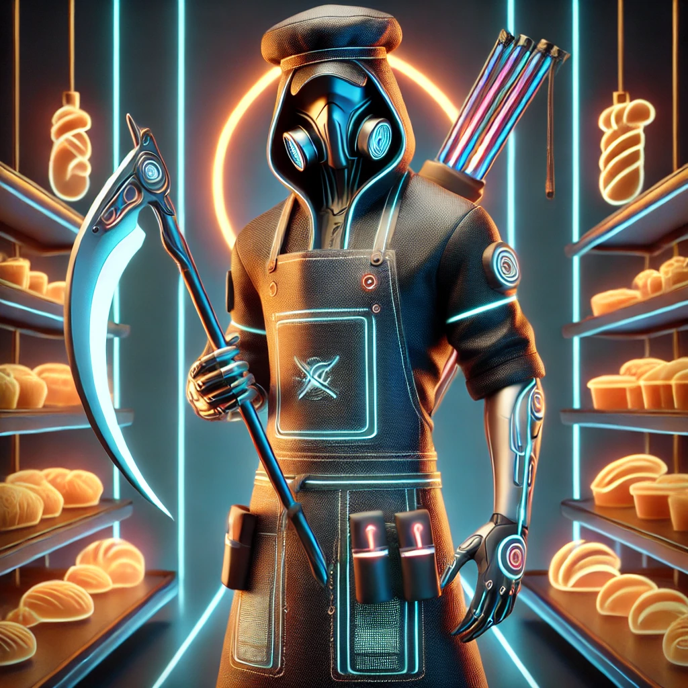

Neueste Meldungen
Exklusive Bilder des neusten Schnitter-Sprosses
In einer Welt, in der selbst der Tod ein Upgrade bekommt, betritt nun eine neue Ikone die Bühne: der Minischnitter – klein, scharf, gnadenlos charmant. Eine frage bleibt jedoch unbeantwortet: Wer ist der Vater?
Weiterlesen

Bäckerschnitter schlägt wieder zu – Todsicher frisch aus dem Ofen
Vergesst Croissants, streicht eure Brötchen – der Bäckerschnitter ist zurück. Und diesmal hat er nicht nur Mehl am Mantel, sondern ein neues Rezept, das euch die Kruste vom Schädel haut.Der Seelensauerteig 666™ – außen knusprig, innen höllisch fluffig.
Weiterlesen„Seelenturbo 3000™“ – Deine Chance auf ewigen Erfolg!
Endlich ist er zurück – mit Nadelstreifenrobe, Sonnenbrille und einem Charisma, das Tote aufweckt: Der Pyramidenscheme-Schnitter, Meister der Skalierung, Prophet des passiven Einkommens, und Visionär einer ganz neuen Art von Seeleninvestment.
Weiterlesen